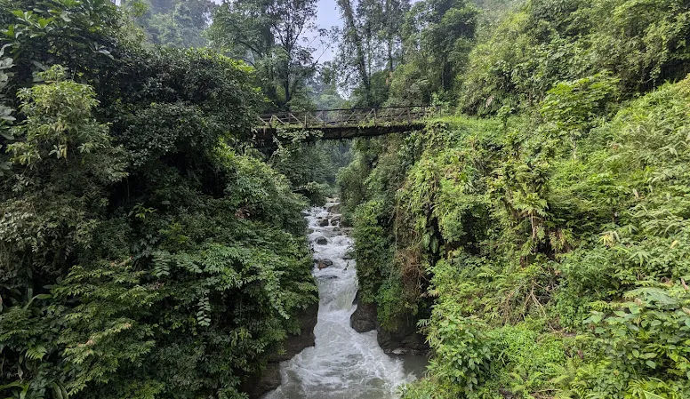
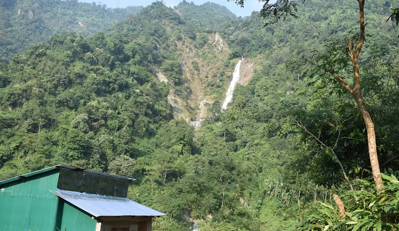
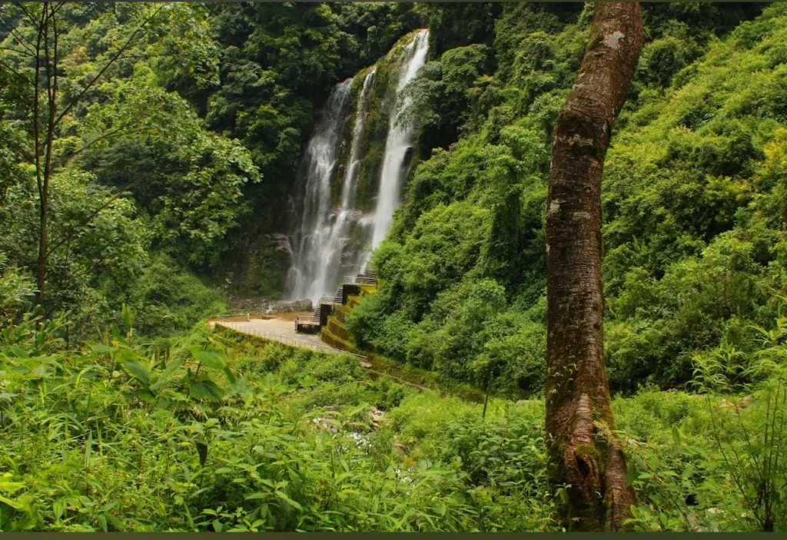
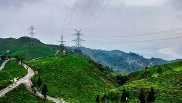
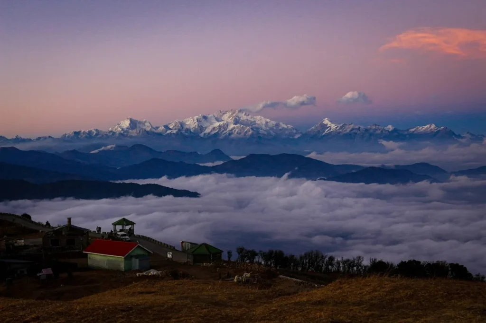
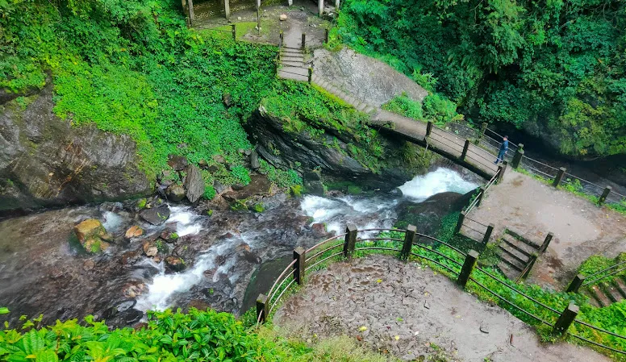
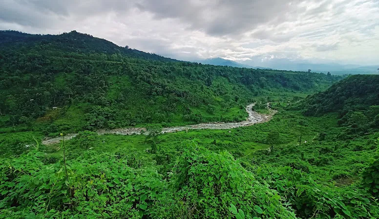
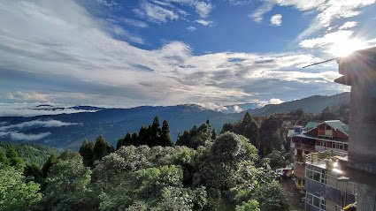
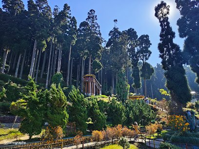

Siliguri also known as the ‘Gateway to Northeast India’ is a fast urbanizing region of West Bengal situated in the southern fringes of the Himalayas. Despite being a connectivity point for travellers connecting to various tourist destinations such as Darjeeling, Sikkim, Bhutan and Assam. Siliguri itself offers a wealth of cultural and natural tourism attractions that often go underappreciated on social media.
Siliguri stands in between Mahananda River on the west side and the tea gardens followed by the Himalayas on the east side. Due to its strategic location, it provides a cosmopolitan population where you find people from all over the world such as Bengalis, Marwaris, Biharis, Nepalese, Tibetans and many others. A few of them are markets, tea estates and wildlife sanctuaries are the key attractions of the city which offer a perfect blend of natural and man-made beauty, increasingly gaining attention online by vloggers and content creators.
Here are the top 10 offbeat places near siliguri that have taken social media by storm:
1.Geetkhola
Geetkhola is one of the least known places which is situated on the way to lava from gorubathan. The drive to geetkhola is very beautiful with views that are often shared on social media.
Namely, Geetkhola,three sisters waterfall is covered by the dense forest spread across the country. More so, the small stream found around the region contributes to the peaceful feel of the place.

Best time to visit
The ideal period that one can visit Geetkhola is during the dry months of the year they include from October to February
What’s special about this place?
Geetkhola also has not developed as a tourist destination unlike other famous trekking routes so one can find beauty of nature and calmness there.
Attraction-Photography, water activity
2.Asalea waterfalls
There is a village called Kharbani in Mirik subdivision of Darjeeling district. This is perhaps the last village in INDO-NEPAL border. This place is at about 2:30 hrs for from Siliguri and has the panorama of Tea gardens, Mechi rivers and paddy fields of Nepal.
The last few distance to cover is a little hike to get to the waterfall; this brings a little thrill to the journey. The serene environment, perfect for nature lovers, is increasingly being featured on social media.

Best time to visit:
One is advised to visit this place during the monsoon and post-monsoon season from June to October and this is because the waterfall is fully supplied during this time and the environment is green.
What’s special about this place?
There is a short trail through the forest which one has to undertake to get to the falls. It is a very easy trek accessible for almost anyone but, becomes little strenuous during the rainy season as the trail includes a lot of stones and sloppy tracks.
The areas around the waterfall include steep cliffs that are un-even and rocky, and are covered by vegetation and offer a perfect backdrop forgets. But during the time of heavy rainfall, one has to be very careful because the trail used for trekking becomes slippery.
Attraction-water activity, trekking
3.Rainbow waterfalls
The Rainbow Waterfall may not be as big or popular as other waterfalls in the region, but it has all the potential to become a social media sensation due to its quiet and beautiful location.
The environment surrounding the waterfall is still unexplored and this makes it suitable for anyone who wants to have some contact with nature. The passage to the waterfall is through the thick forest and therefore making it a hidden gem that’s slowly gaining attention on social media.

Best time to visit:
The best time to come to Rainbow Waterfall is during the monsoon and post monsoon period when the water flow will be at its best that is June to October.
What’s special about this place?
The excitement here is a 30m tall waterfall and the area is covered by green forests with the sound of the waterfall’s gushing water being so soothing. On some days, the mist that comes out from the waterfall gathers sunlight, creating a rainbow in the process hence the name rainbow waterfall.
Flowering plants are also abundant around the waterfall especially around this time of the year. However, the trail may be slippery and so one needs to be careful especially when following the trail in wet conditions.
Attraction- photography, birdwatching
4.Muktikhola
Muktikhola is only 3 kilometres away from dudhia. This is a quiet place which is located in the midst of the steady growth of trees as well as tea plantations. The name ‘Muktikhola,’ meaning ‘River of Salvation,’ perfectly suits this untouched gem, which remains in its natural form, free from the usual tourist crowds. As you get to Muktikhola you find a calm river passing through beautiful thick woods-a scene that’s slowly catching the eye of social media influencers.

Best time to visit:
Muktikhola can be visited throughout the year but it is most preferable to visit this place during the post monsoons from September till November and Spring Season from March to May. This is the time when the weather is congenial, the river is full, lastly, the trees, flowers and other plants are lush green.
What’s special about this place?
The place is idealised for tourists with interest in nature, photographers, as well as those who wish to take some time away from the busy world and contemplate in solitude.
The water is clean and clear shining through the rocks and the big stones making noises that harmonize with the chirping of birds and the whispering wind.
Attraction- picnic
5.Tingling view point
Tingling Viewpoint is a wonderful yet offbeat place which is located in the Kurseong area of West Bengal and is going viral on social media for its beautiful views of tea gardens, hills, and in the far-off, the glimpses of the Himalayan range.
As a traveller, getting to Tingling Viewpoint is like getting into a piece of picture where nature has really pulled everything it has. Tingling Viewpoint is at 30 kilometers from Kurseong, and 50 kilometres from Darjeeling and at the outskirts of the small town of Mirik.
It is located at the Tingling region, that encompasses the famous Gopaldhara Tea Estate, one of the oldest and most beautiful tea producing zones in the region.

Best time to visit:
The best time to go to Tingling Viewpoint is during the post monsoon season which is during September to November and spring that is from March to May.
It is advisable to do these during these early times for the skies are not hindered by anything and one can actually see far-away mountains
What’s special about this place?
The viewpoint is the best place for those who like to gaze at the beautiful structures nature provided people with. Because of its quiet sphere, together with marvelous outlooks, it is perfect for shaking off, meditation, or just enjoying the view.
It also turns into a particularly good photo location because depending on the light, it looks different at different times of the day.
Attraction- scenary
6.Tonglu
Tonglu is situated in the Darjeeling district of West Bengal and the place lies very close to the Indo-Nepal international border. It is on the way to Sandakphu the highest peak of West Bengal and is approximately 22 kilometres away from Darjeeling.
Tonglu is a small village with a few walkers’ huts, a single storey building that serves as a guest house and a tea stall. Weather is dry and to some extent chilly and nothing can be heard in the vicinity except the howling of the wind and the twitting of a mountain bird occasionally.
This place is becoming a social media favorite, with its untouched beauty and peaceful atmosphere making it a must-visit for those seeking to share unique, offbeat travel experiences online.

What’s special about this place?
Tonglu is one of the biggest halting points of the Sandakphu trek and reaching this viewpoint is a delight. The trail further goes through forests and meadows; the experience is fulfilling for those who would wish to take the backpacker’s trail as well as those who are inexperienced in hiking. The spring season also sees flowers such as the rhododendron blossom while other alpine flowers in the land also bloom.
Best time to visit:
An enjoyable experience of Tonglu would be during spring period (March to May) and the autumn period (September to November). At these times, the climate is fairly predictable and it being dry most of the time the skies are most often clear to give clear view of the Himalayan-mountain ranges.
Attraction- hiking, scenery, homestays
7.Ahaldhara
It is located at a height of almost 4500 feet in the Mahananda Wildlife Sanctuary, near to Latpanchar, the highest peak in Mahananda Wildlife Sanctuary which is famous for its bio-diversity and tourism point for the beautiful view of hills and plain land.
Ahaldara also boasts of scenic beauty with exciting view of both sunrise and sunset. This spot is becoming a social media favorite for capturing the beauty of the hills and plains. The scenic beauty of Ahaldara, especially the mesmerizing views of both sunrise and sunset, makes it a must-visit for travelers eager to share unforgettable experiences online.
Best time to visit:
The best time to visit Ahaldara is from March to May and from September to November that is during the spring and autumn seasons. These months are characterised by good weather, relatively clear skies and hence the best to sight see especially the Himalayan ranges.
What’s special about this place?
The viewpoint itself is fairly underbaked, but this is where the beauty of the idea lies. It should be noted that Ahaldara is quite remote, which is why it cannot get annoying to find a place for meditation or contemplation here: the whole territory is covered with a dense forest, and you can hear only the whispers of nature here.
Attraction- 360-degree views of the Himalayan ranges, tea gardens
8.Chhangey falls
Chhangey Falls is located, with respect to geographical locations about 14 kilometers away from Lava, a small town near to Kalimpong and 50 kilometers away from Kalimpong. The waterfall lies in the heart of the forests of the region and those forests are of Neora Valley National Parks.
The journey from the winding mountain roads to the dense forest trails leading to the beautiful Chhangey Falls is an adventure that’s gaining popularity on social media.

Best time to visit:
The best season, to explore Chhangey Falls is monsoon and post-Monsoon season that is from June to September and October to November, respectively. During such periods the water flow is at its maximum and the forests around the waterfall are so rich in growth.
What’s special about this place?
The land surrounding the water fall is green and filled with mountains, trees, and abundance of bushes. It is breath taking with fresh and natural smells of fresh earth and flowers hence, it is perfect for resting or re-energizing one’s soul. The waterfall is not that famous as other attractions in the area which means that tourists can enjoy the landscape without too much interference.
Distance from Siliguri-110 km📍
Attraction- waterfall, scenic beauty
9.Jhalong
Jhalong is another tourist attraction point of the Dooars. Ghythu is located at Jaldhaka River bank and in the lap of Eastern Himalayan Region. It is located in the Kalimpong district; the village gives tourists a feeling that is quite close to Bhutan and as such it is rich in culture.
This richness in culture is attracting many social media influencers looking to share their adventures online.

Best time to visit:
It would be best to visit this place during the winter and early spring season particularly from the months of October up to March. In this time of the year, the climate is mild and the skies are clear most of the time thereby provided the best view of the neighbouring terrains.
What’s special about this place?
The location is Jhalong River Camp which is one of the famous tourism attractions that is regarded as a suitable place for river side camping. Here you would have a chance to sit back, watch the river and murmur the stream which is very soothing.
It is calm hence recommending it for meditating, resting and taking a break from the hustle and bustle of city life. All in all, Jhalong rovers invite and gives a fantastic experience for any tourist.
Attraction- camping
10.Dawaipani
Dawaipani is a nicely tucked away barely known little gem of Nepal that quite often eludes the enticing clutches of better-known travel guides due to its stirring beauty, peace and tranquillity which grips any visitor at once.
It is located at an altitude of 2,000 m. The striking landscapes are increasingly featured on social media, making Dawaipani a sought-after destination for those looking to share breathtaking, offbeat travel experiences online.

Best time to visit:
The best times to visit Dawaipani in West Bengal are spring (March to May) and fall (September to November)
What’s special about this place?
Breathe in the fresh mountain air and listen to the gentle rustle of leaves in the breeze. This hidden oasis offers a peaceful escape into nature with its beautiful viewpoint.
Attraction- view point
11. Lepchajagat
Lepchajagat is a beautiful village situated on the hills close to Darjeeling, just a few hours’ drive from Siliguri. It provides stunning views of the Kanchenjunga range and is well-known for its beautiful forests, foggy settings, and peaceful tea gardens. Lepchajagat is peaceful, unlike popular tourist destinations, which makes it perfect for hiking, nature walks, or just relaxing in the middle of greenery.
With its authentic food and friendly hosts, the village also provides a glimpse into Lepcha culture. It’s a photographer’s dream come true and a unique way to get away from the city, especially for early morning walks when the clouds roll across the valleys.

Best time to visit:
The best time to visit Lapchajagat is between March-June and September-November to get the clear view of kanchenjunga.
What’s special about this place?
The place is surrounded by lush green forest, tea garden and beautiful valley. Unlike any other hill station, Lapchajagat offers unobstructed, serene views of the snow-capped Kanchenjunga mountains, especially during sunrise.
Attraction– View point, peaceful trekking, lush forest.
12. Lamahata
Located about 64 km from Siliguri, is a serene hilltop village. It is surrounded by lush forests of pine and gentle hills, making it perfect destination for a day trip or escape from the city. The place also has an eco-friendly park, a lake and a hiking trail at the top of the hill, where you can enjoy the calming surroundings.

Best time to visit:
The best time to visit Lamahatta is March to May, an ideal spring period for pleasant weather and October to December, this autumn and early winter offers clear sky and cool temperature to have outdoor activities.
What’s special about this place?
The place is dotted with lush forests, winding trails, and small waterfalls, making it ideal for trekking, birdwatching, and photography.
Attraction– Serene forest and Eco-Park
Conclusion
Siliguri is actually known as the Gateway to North East India and hence this place is a storehouse of several unexplored, untouched places which has beauty bestowed on them along with completion.
The Geetkhola, Asalea Falls, Rainbow and the Muktikhola contain breathtaking sceneries that continue to attract many people on the social media platforms. Sights that are lovely and quiet are seen and felt in Tingling Observation Deck and Tonglu, and these are perfect for the social media junkies who want fantastic sight to capture.
On the other hand, Ahaldara and Chhangey Falls have recently surfaced as tourist spots that people have shared breathtaking photos of the area which shows the beauty that it has to offer in terms of fauna, flora and magnificent rocks.
Culture and sceneries found in Jhalong and Dawapani increase Siliguri’s attractiveness to visitors seeking to share exciting experiences with the media and exploring the site and consider the site less valuable than the charm.